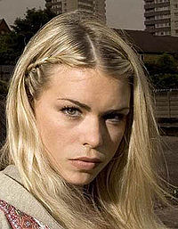

Rose Tyler

Rose Marion Tyler, Billie Piper tarafından canlandırılan Birleşik Krallık yapımı kült bilim kurgu dizisi Doctor Who'da hayali bir karakterdir. Rose Tyler, dizinin yapımcısı Russell T Davies tarafından yaratıldı. 2005'te Doctor Who'nun yeniden gösterime girmesiyle birlikte kendi adını taşıyan dizi prömiyeri ile seyircilere tanıtıldı. Karakter, sırasıyla Christopher Eccleston ve David Tennant tarafından canlandırılan dokuzuncu ve Onuncu Doktor'a yol arkadaşlığı yaptı.
Dizinin öykü kısmında Londra'da bir mağazada çalışan satış elemanı olarak tanıtıldı. Ayrıca annesi Jackie Tyler (Camille Coduri) ve erkek arkadaşı Mickey Smith (Noel Clarke) de yardımcı oyuncuları olarak seyirciyle buluştu. Klasik Doctor Who serilerinde Doktor ile yol arkadaşları arasında aşktan kaçınılmış olsa da Doktor'a güveni sürekli artan Rose, ona aşık olduğunun farkına varır. Çiftin 2. sezon finalinden sonra sonsuza kadar ayrı kalacakları düşünülse de dördüncü sezonun sonlarına doğru Rose geçici olarak dönmeyi başarır.